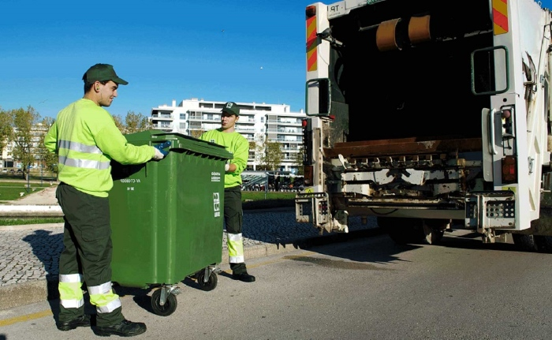
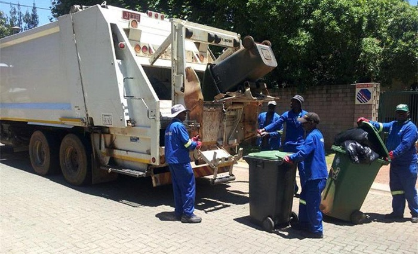

Five Reasons Why Professional Rubbish Removal Is So Important During Construction Projects
Whenever there is a construction project underway, the debris that is created becomes a nightmare that property owners have to tackle. The best way to handle this is to hire professional construction rubbish removal such as Go Easy Rubbish Removal, which will help you get the property back to usable condition. This is especially beneficial if you’re facing renovation or new construction.
Construction projects can be stressful, and this stress can have an impact on both workers and the facilities being built. Poor construction can lead to accidents, which could result in injuries for workers. Poor construction could also lead to injuries for people in the facility once it's complete if maintenance or upkeep is not performed correctly.
Why You Need a Waste Management Company
A waste removal company will be of service to you as you work on your construction project and get rid of built-up trash. It's inevitable that, even with smaller projects, you will produce plenty of debris, rubble, and scrap. Whether you are renovating a kitchen, constructing a new home, or adding to the house, there always seems to be a limitless amount of waste to manage.

You can keep your construction site clear of rubbish
A construction site that's covered with garbage and debris is risky to operate in. Carrying out such measures leads individuals to risk injury. The more junk is lying around, the more vulnerable to accidents people are.
You'll be able to conveniently dispose of waste in more compact spaces simply because there isn't enough room for all the waste that's generated and you need to make room for construction equipment. Choosing to have your skip on site is a tremendous advantage. You'll be able to dump any waste or waste products into it and you'll have it neatly organised and set to be removed when you schedule it.
Potentially make income from your construction site waste
Waste collection is not simply about transporting the trash to the landfill. It can become the beginning of a whole recycling process that transforms your junk into something useful. In some cases, you might be able to sell the waste as a commodity and make a profit off of it.
You don’t have to worry about how to sort the good from the bad
Landfills are not always the best place to get rid of your construction project waste, and they may have restrictions on particular items. For example, plaster sheeting often has restrictions because it produces fumes when breaking down. Several materials may not be accepted when disposing of waste.
By applying this method, someone else will deal with it for you. This saves you time and money and an immense amount of hassle. It can be difficult to find a decent spot to get rid of your hazardous materials and this is also pricey. It is far more practical to simply hire one specific company to do the disposal for you.

Improve your business reputation
Using a professional waste management service will look expensive. Instead of accumulating waste within the workplace, you'll have it taken away, and the look you fabricate from the outside will be tidy and attractive.
Skips are a great way to set your business apart from the competition. Using it will showcase all your knowledge throughout the building process to new customers, potential clients, and future tenants. Using a skip can also be a great way to advertise your excellent work to homeowners across the country.
Help improve the environment
Construction and demolition can inflict substantial harm on the environment. Contrarily, many new resources are used, harmful chemicals are released into the mix, and a lot of materials that last for decades can be abandoned. You may be able to select an organisation that provides waste removal services, meaning they may turn your garbage into useful products, such as gravel and bricks, which will cut down on environmental impact.
No matter why you're choosing a waste removal company, you'll certainly notice that many benefits exist. Your business will reap the benefits of increased professionalism and you will have fewer difficulties. Therefore, this is one of the best choices for your company.
Conclusion
Professional rubbish removal is an important step in any construction project. It can help keep your site clean and organized, and it can also help reduce the amount of waste that is produced. By taking advantage of professional rubbish removal services, you can minimize the hassle and make your construction project run more smoothly.